那天，未來被不留痕跡地抹去了，來自天空的侵略之手將人類史變回白紙。
我們的功績被斷定為錯解，甚至連泛人類史都不被列入過去。
天文台被凍結，世界被分成七個異聞。
然後ーーー
打破三個月的沉默，最後的人類從虛數之海浮起。
他們要挑戰的是被極寒歷史封閉的新世界
2018年4月。現在，取回一切的戰爭就此開始。
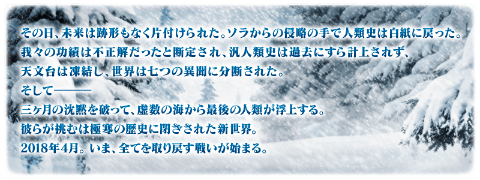
◆公開時間◆
2018年4月4日(三) 17:00預定
◆第2部 第1章「Lostbelt No.1 永久凍土帝國 安娜塔西亞 獸國的皇女」開幕◆
「永久凍土帝國 安娜塔西亞 獸國的皇女」的舞台為人類史滅亡後的新世界。
從永久凍土的極寒地開始新的物語。
◆開放條件◆
通過第2部序幕「序／2017年 12月31日」後開放。
※不需要通過亞種特異點(從Ⅰ到Ⅳ)。

在Fate/Grand Order官方網站內首頁及Gallery，公開了第2部 第1章「Lostbelt No.1 永久凍土帝國 安娜塔西亞 獸國的皇女」的30秒廣告。
敬請確認。
動畫製作：A-1 Pictures
※4月3日(二) 17:00追記

新魔術禮裝「極地用迦勒底制服」登場！
進行第2部 第1章「Lostbelt No.1 永久凍土帝國 安娜塔西亞 獸國的皇女」主線關卡的話，可入手新魔術禮裝「極地用迦勒底制服」。
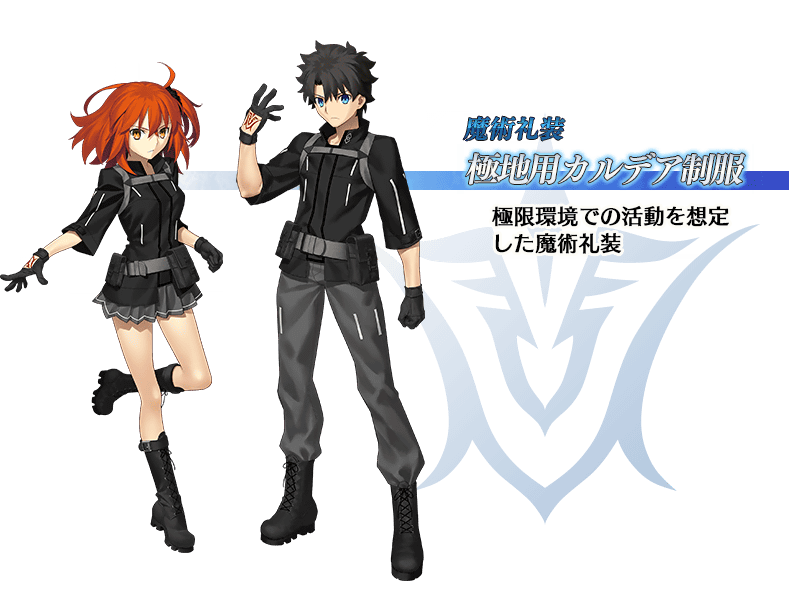
自第2部 第1章「Lostbelt No.1 永久凍土帝國 安娜塔西亞 獸國的皇女」，新追加2種道具！
為新登場Servant的技能強化及靈基再臨必要的道具。
主要能從於第2部 第1章「Lostbelt No.1 永久凍土帝國 安娜塔西亞 獸國的皇女」的主線關卡出現的敵人做為戰利品獲得。
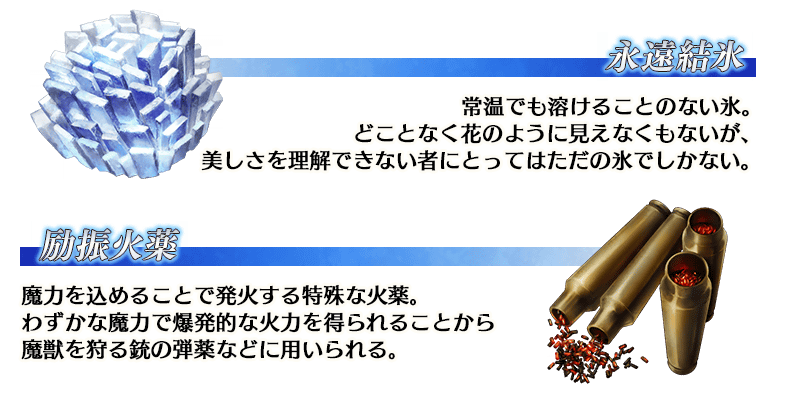
瑪琇・基利艾拉特的戰鬥時的動作及寶具演出翻新。
據此變更，變更瑪琇・基利艾拉特的戰鬥角色圖像外，變更攻擊時和寶具演出的特效效果等。
※遊戲內的一部份關卡中會以變更前的狀態顯示。
◆翻新時間◆
2018年4月4日(三) 17:00預定
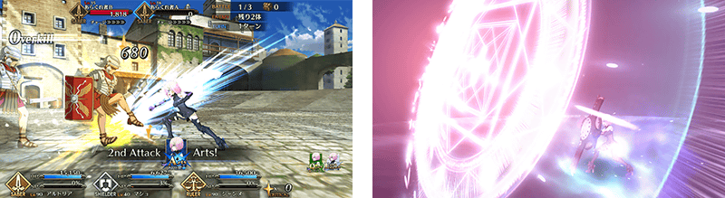
移動至指令階段畫面後，點擊在畫面右下顯示的「返回」鍵，能變返回至戰術使用階段畫面。。
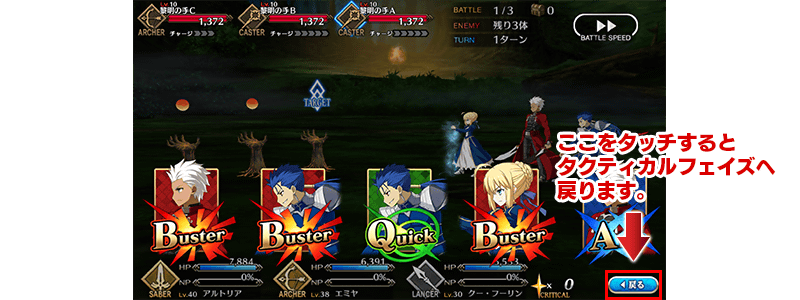
目前為止，移動至指令階段畫面才分配的星星，變更為在戰術使用階段畫面分配。
※移動至指令階段畫面後點擊「返回」鍵也不會讓分配的星星數有所變化。
但是，在戰術使用階段畫面，使用星星集中度提升技能和「Order Chage(オーダーチェンジ)」「指令改寫(コマンドシャッフル)」等影響星星分配和指令卡分配的技能會讓星星再分配。
※請注意獲得51個以上星星的情況，在分配後多餘的星星會以灰色顯示。移動至下個回合時，不會繼承顯示為灰色的星星量。
※使用有星星獲得效果技能的情況，使用新獲得的星星，追加分配至已分配的指令卡。
※使用有星星減少效果技能的情況，先從多餘的星星減少，不足的星星量從已分配的星星か減少。
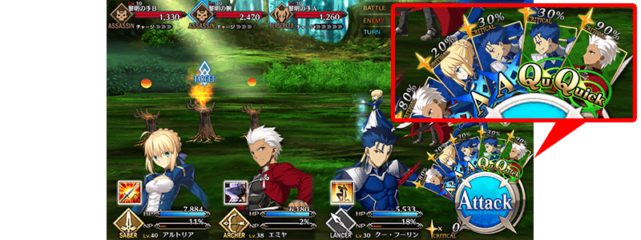
所有可從友情點數召喚入手的「★1(C)」及「★2(UC)」概念禮裝翻新(插圖和ATK/HP及技能等全部革新)
請注意據此，做為翻新對象的既有概念禮裝，變得無法新入手。
※關於原本持有的翻新對象概念禮裝不會變更插圖和ATK/HP及技能的效果。
◆變得無法入手概念禮裝一覧◆
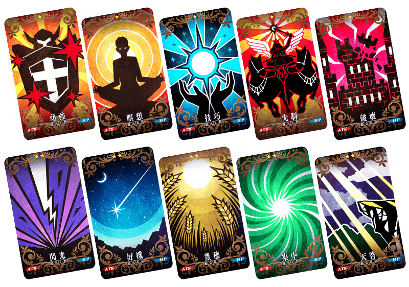
◆新追加概念禮裝一覧◆
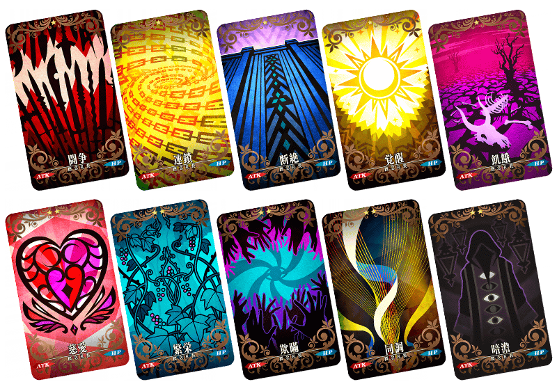
變更在稀有度「★1(C)」及「★2(UC)」一部份Servant卡面顯示的背景圖像。
在下述背景圖像介紹一部份變更後的卡面。
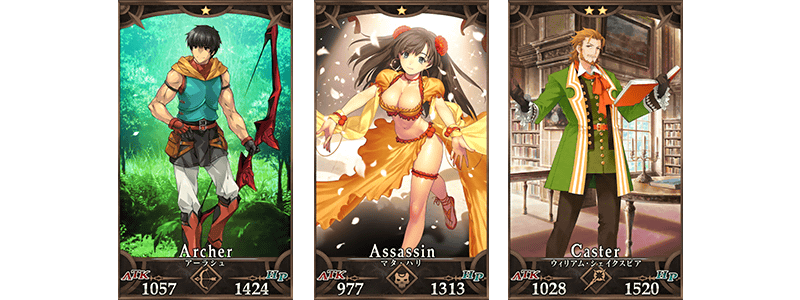
◆對象Servant◆
| 職階 | 稀有度 | Servant名 |
|---|---|---|
| Archer | ★ | 阿拉什 |
| Lancer | ★★ | 武藏坊弁慶 |
| ★★ | 雷奧尼達一世 | |
| Rider | ★★ | 愛德華・蒂奇 |
| ★★ | 聖喬治 | |
| Caster | ★ | 沃夫岡・阿瑪迪斯・莫札特 |
| ★★ | 威廉・莎士比亞 | |
| ★★ | 漢斯・克里斯蒂安・安徒生 | |
| Assassin | ★ | 佐佐木小次郎 |
| ★ | 瑪塔・哈里 | |
| ★★ | 夏爾＝亨利・桑松 | |
| ★★ | 咒腕的哈桑 | |
| ★★ | 歌劇魅影 | |
| Berserker | ★ | 阿斯忒里歐 |
| ★ | 斯巴達克斯 | |
| ★★ | 血斧・埃里克 | |
| ★★ | 卡利古拉 |
追加在友情點數召喚抽出的「經驗值」「芙芙」「概念禮裝」，預先做好「自動變還設定」的話，於召喚実行後的靈基召喚畫面會自動變還(販賣)成魔力稜鏡或QP的功能。
※Servant為自動變還的對象外。
※魔力稜鏡或QP到達上限的情況，會顯示魔力稜鏡或QP的催促使用對話視窗。
※請注意初期設定為不做自動變還設定的狀態。
※自動變還初次入手的概念禮裝的情況也會登錄在圖鑑(マテリアル)。
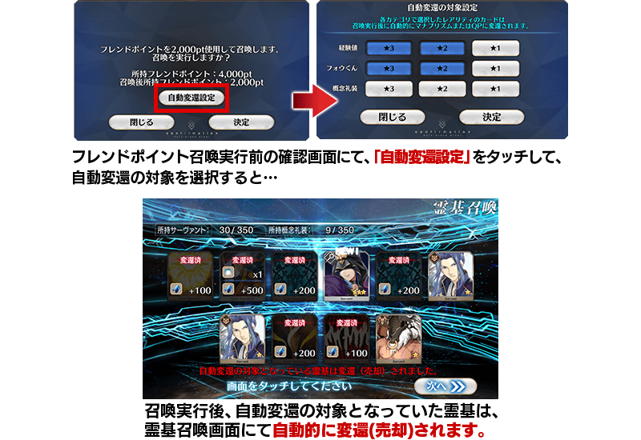
一部份的技能圖示的圖像翻新。
※只有圖示的變更，效果並未變更。
◆對象技能◆
| 技能圖示 | 對象技能 | |
|---|---|---|
| 神性A++ | 神性A | |
| 神性B+ | 神性B | |
| 神性C | 神性D | |
| 神性E | 神性E- | |
| 女神的神核EX | 女神の神核A | |
| 女神の神核B | 女神の神核C | |
| 女神的寵愛EX | トラッシュ＆クラッシュEX | |
| 鮮血の伝承A+ | 七つの冠C | |
| カーマの灰EX | - | |
| 概念禮裝技能「コードキャスト」 | ||
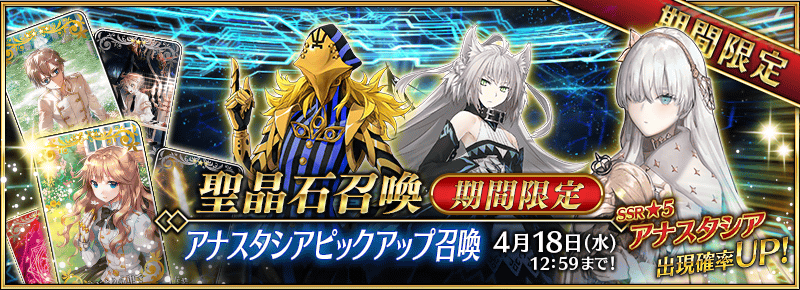
◆「安娜塔西亞Pick Up召喚」期間◆
期間:2018年4月4日(三) 17:00預定～4月18日(三) 11:59
為了記念第2部 第1章「Lostbelt No.1 永久凍土帝國 安娜塔西亞 獸國的皇女」的開幕，以期間限定舉辦「安娜塔西亞Pick Up召喚」！
※未到達第2部 第1章「Lostbelt No.1 永久凍土帝國 安娜塔西亞 獸國的皇女」的狀態也能進行「安娜塔西亞Pick Up召喚」。
於第2部 第1章「Lostbelt No.1 永久凍土帝國 安娜塔西亞 獸國的皇女」活躍的Servant「★5(SSR)安娜塔西亞」「★4(SR)阿塔蘭塔〔Alter〕」「★3(R)阿維斯布隆」新登場。
上述3位Servant Pick Up！
※「★5(SSR)安娜塔西亞」「★4(SR)阿塔蘭塔〔Alter〕」「★3(R)阿維斯布隆」在Pick Up期間結束後追加至故事召喚。
Pick Up期間中，新登場Servant的出現機率提升！
詳情請在聖晶石召喚畫面左下的召喚詳細確認。

新概念禮裝「★5(SSR)陽だまりの中で」「★4(SR)最後の語り部」「★3(R)叡智の光」也先行新登場！
另外，★3(R)概念禮裝的一部份陣容翻新！
※「★5(SSR)陽だまりの中で」「★4(SR)最後の語り部」「★3(R)叡智の光」從Pick Up召喚舉辦期間結束後的2018年4月18日(三) 12:00追加至故事召喚。
※隨著翻新，「★3(R)ミラクル求道者」變為Pick Up召喚的召喚對象外，只會在故事召喚被抽出。
※2018年4月18日(三) 12:00以後「★3(R)ミラクル求道者」也不會從故事召喚被抽出，追加到友情點數召喚。
10次召喚中確定1張★4(SR)以上和確定1位★3(R)以上的Servant！
※確定★4(SR)以上包含Servant和概念禮裝。
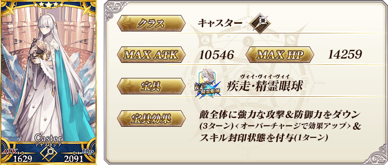
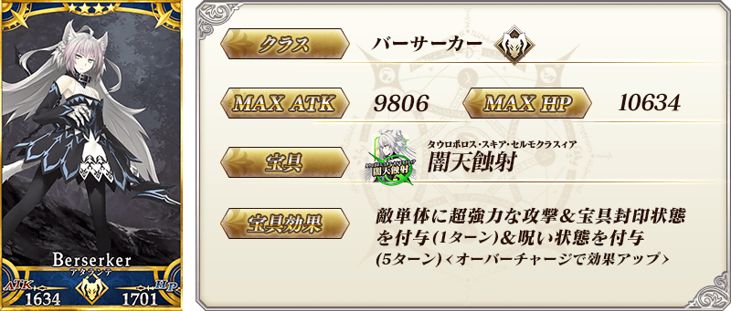
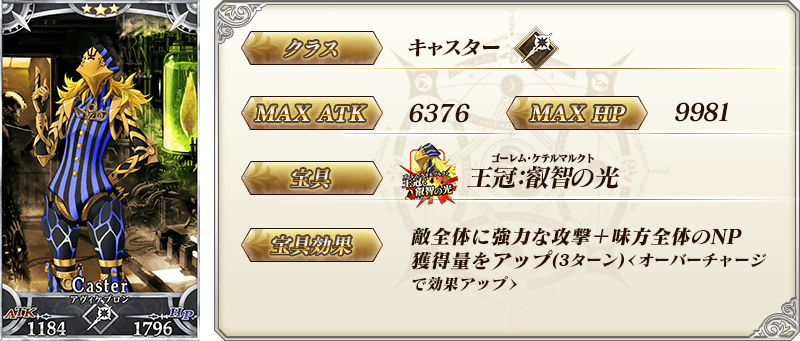
| 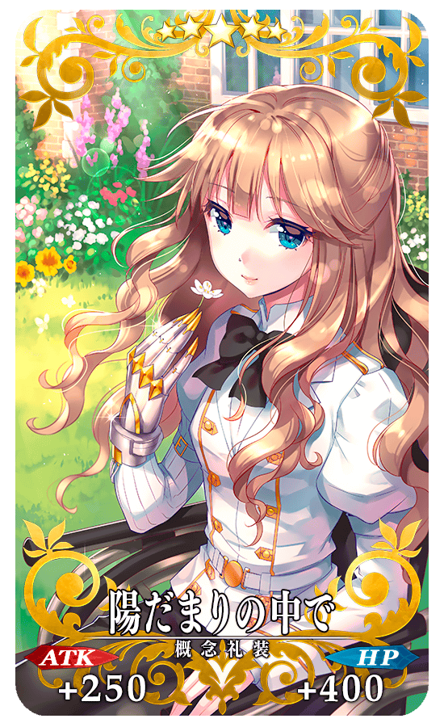 |
★★★★★SSR |
| 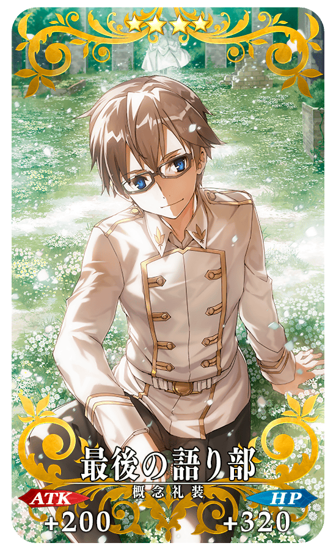 |
★★★★SR |
| 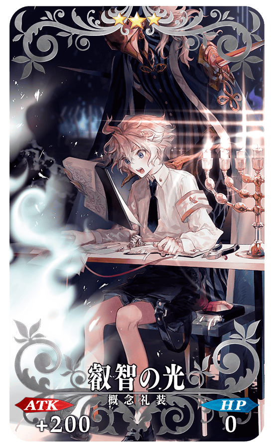 |
★★★R |
介紹安娜塔西亞的寶具演出！
在「Fate/Grand Order」官方網站內的公告中，公開了「★5(SSR)安娜塔西亞」的寶具演出。敬請確認。
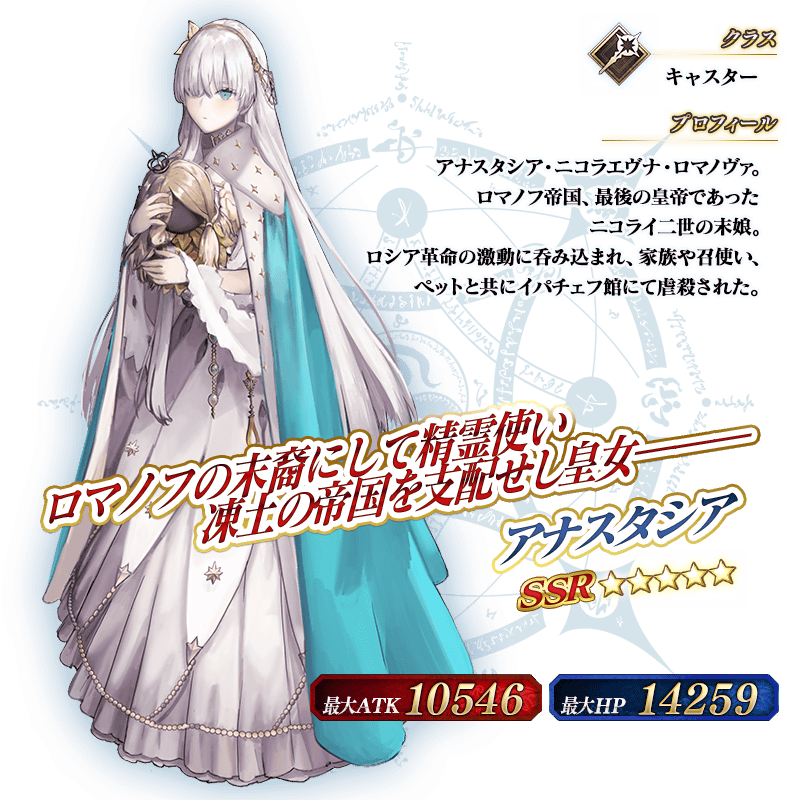
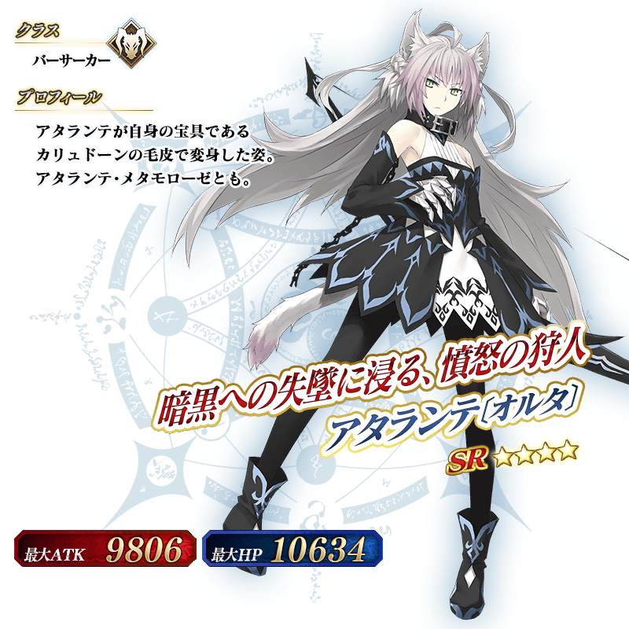